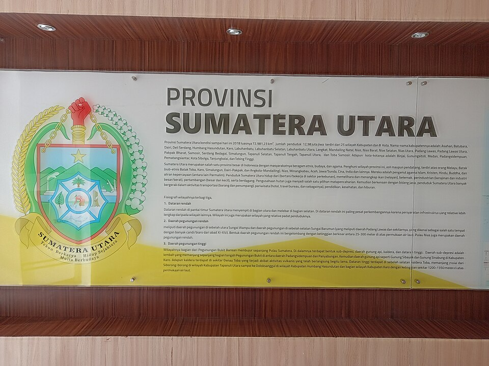
Prioritas 01Museum Deli Serdang
Lubuk Pakam · sejarah resmi
Pilihan paling aman untuk mulai mengenal prasejarah, Kesultanan Deli-Serdang, budaya lokal, kolonialisme, dan perjuangan kemerdekaan.
Rifa, jalan sendiri bukan berarti sendirian. Dunia tetap punya cara lembut untuk menyambut kamu.
Panduan kecil untuk menyusuri sejarah, budaya, dan rasa lokal—dibuat supaya kamu bisa pergi dengan tenang, pulang dengan cerita.
Tidak semuanya adalah destinasi komersial. Justru di situlah letak pesonanya: beberapa tempat perlu didatangi dengan rasa ingin tahu dan rasa hormat.

Prioritas 01Lubuk Pakam · sejarah resmi
Pilihan paling aman untuk mulai mengenal prasejarah, Kesultanan Deli-Serdang, budaya lokal, kolonialisme, dan perjuangan kemerdekaan.
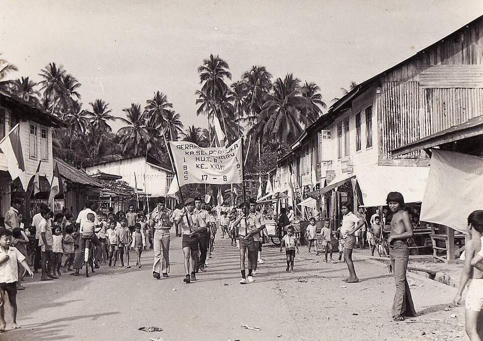
Prioritas 02Kedatukan Urung Sapuluh Dua Kuta · sejarah lokal
Masjid, rumah kedatukan, makam, dan manuskrip lama. Autentik, tetapi bukan museum—datang bersama pemandu lokal.
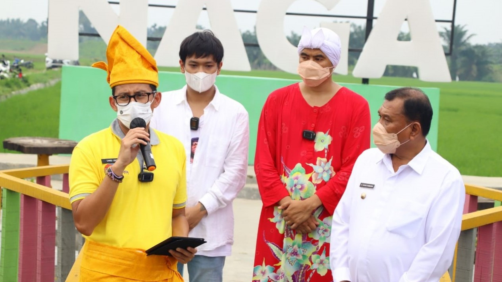
Budaya desaDenai Lama · tradisi dan sawah
Cerita rakyat, jajanan tradisional, pasar koin kayu, dan suasana desa. Lebih hidup saat akhir pekan atau acara khusus.
Foto-foto di bawah memakai dokumentasi tempat yang spesifik—bukan lagi gambar generik. Jadi kamu bisa membayangkan isi kunjungannya sebelum datang.
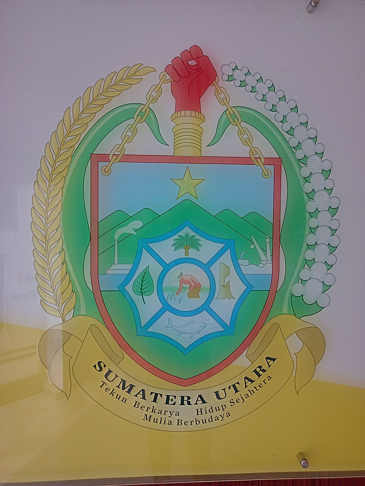
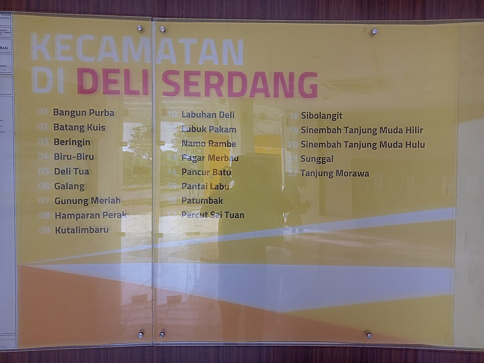
Dokumentasi Museum Deli Serdang, Hamparan Perak, dan Tandem: Wikimedia Commons. Foto Paloh Naga: VIVA. Foto Bagan Percut: RM Raja Percut.
Secara umum, kamu akan menemukan informasi prasejarah, Kesultanan Deli-Serdang, pakaian dan alat budaya, koleksi perjuangan kemerdekaan, serta benda-benda yang membantu membaca identitas multietnis Deli Serdang.
Kompleks besar dengan ruang ibadah, patung dan ornamen Buddhis, kolam, area terbuka, serta fasilitas kuliner vegetarian. Datang sebagai pengunjung yang menghormati fungsi utamanya sebagai tempat ibadah.
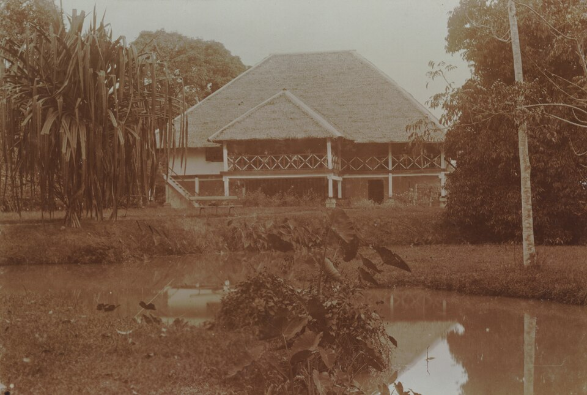
Di Tandem dan Sei Glugur, jejak perkebunan tembakau dan bangunan kolonial masih menjadi bagian dari lingkungan warga. Nilainya tinggi, tetapi kondisinya tidak selalu terawat dan sebagian bukan destinasi resmi.
Kuliner terbaik di sini bukan hanya soal menu, tapi juga cara datang, memilih bahan, dan menikmati suasana.
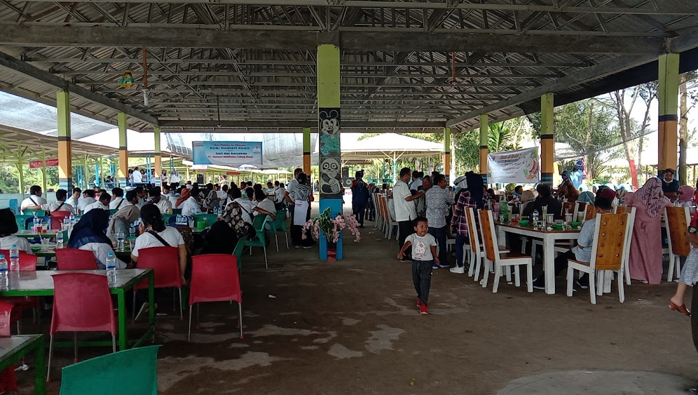
Pilih hasil laut segar, sepakati harga, lalu minta rumah makan memasaknya.
Gurih, segar, dengan kelapa sangrai dan bumbu Melayu Deli.
Pedas-asam, cocok dengan nasi panas dan makan ramai-ramai.
Dua menu yang paling nyambung dengan tradisi Melayu Deli.
Opsi tenang di Lubuk Pakam; ulasan pengunjung cenderung positif.
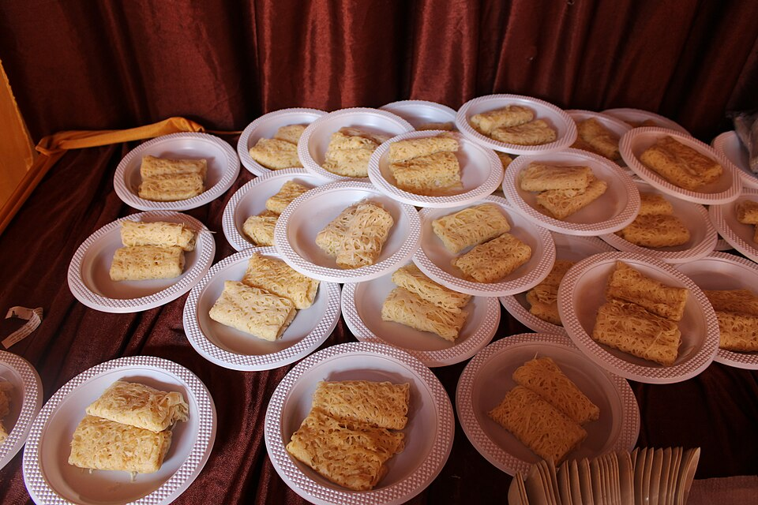
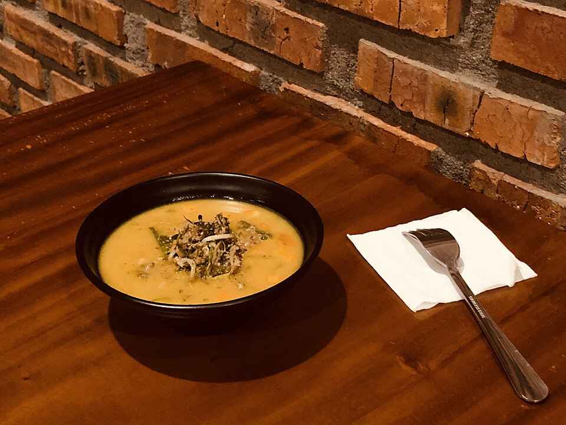
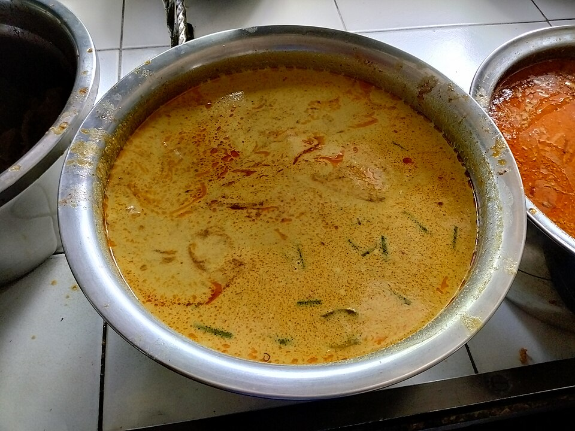
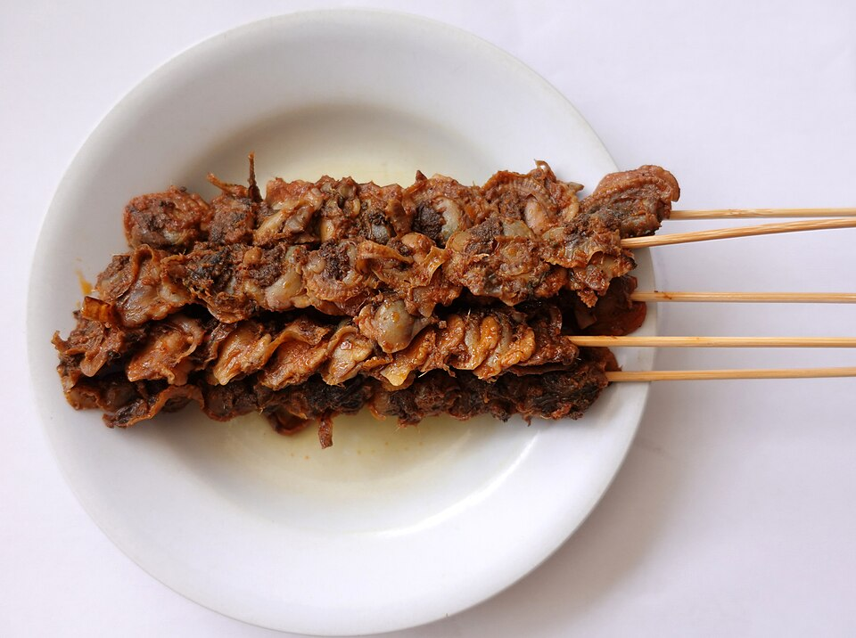
Tiga cara sederhana untuk menjadikan kunjungan lebih terarah.
Museum Deli Serdang → makan siang di Lubuk Pakam → Paloh Naga → pulang lewat Tanjung Morawa.
Museum → Maha Vihara Maitreya → kuliner vegetarian → sore menikmati seafood Bagan Percut.
Museum → Hamparan Perak → situs kedatukan. Gunakan pemandu lokal dan minta izin.
Karena cewek yang jalan sendiri tidak perlu membuktikan apa-apa. Cukup pulang dengan selamat, hati lebih penuh, dan galeri lebih cantik.
“Kamu tidak tersesat. Kamu sedang memberi kesempatan pada jalan untuk memperkenalkan dirinya.”
“Tidak semua tempat harus ditaklukkan. Beberapa cukup dinikmati, lalu ditinggalkan dengan tenang.”
“A little brave, a little careful, very much you.”
Kirim itinerary dan live location ke orang tepercaya.
Pilih destinasi resmi lebih dulu dan pulang sebelum terlalu sore.
Bawa power bank, uang tunai, dan simpan nomor penting.
Kalau suasana terasa tidak nyaman, kamu berhak pergi tanpa menjelaskan panjang.
Checklist kecil agar perjalanan tetap nyaman, sopan, dan tidak mengecewakan.
Jam buka, tiket, menu, harga, dan akses bisa berubah. Hubungi pengelola sebelum berangkat.
Tidak semua lokasi menerima pembayaran digital. Di Bagan Percut, sepakati harga bahan dan jasa masak sejak awal.
Hormati tempat ibadah, warga, artefak, dan bangunan lama. Jangan membawa pulang apa pun dari situs.